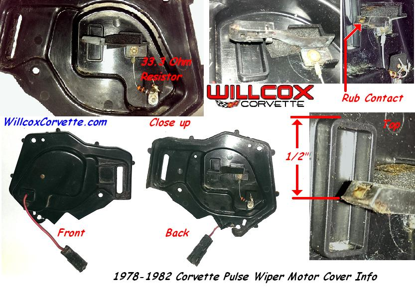
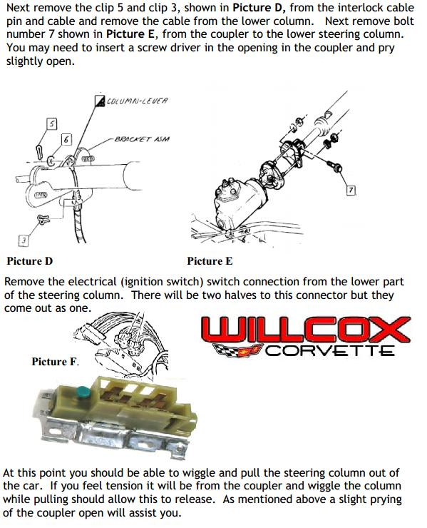
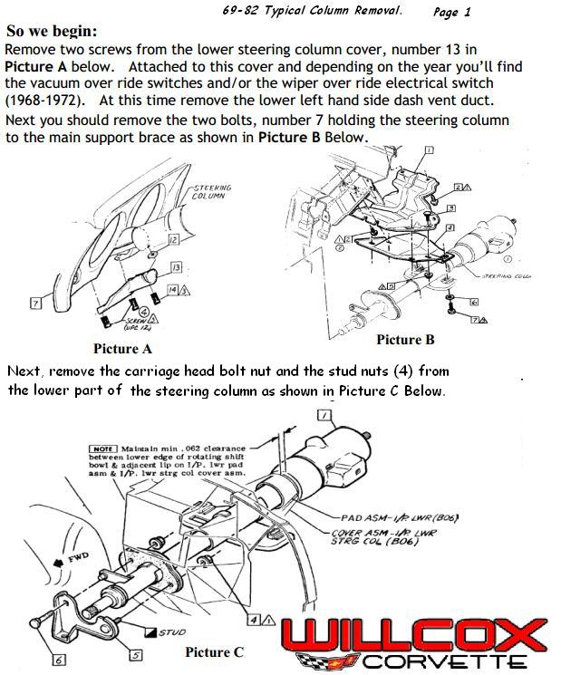
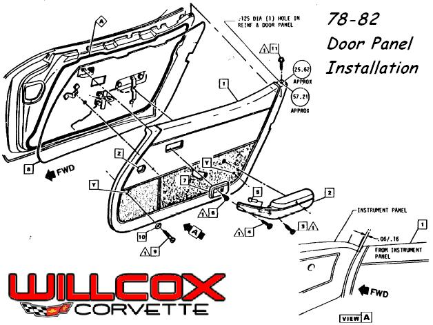
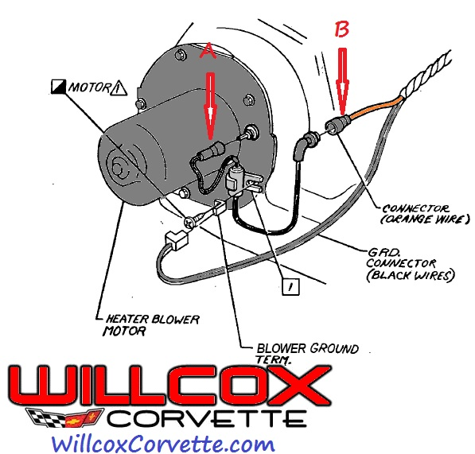

1968-1982 Corvette Headlamp Header Bar Installation
Supporting Documentation
Supporting Documentation
Supporting Documentation
Supporting Documentation
Supporting Documentation
Supporting Documentation
Supporting Documentation
Repair and Installation Help from Willcox Inc, Corvette Parts, Service and Sales I wrote this about ten years ago and thought it might help some people understand a little history about the luggage racks. I think as I get older … Continue reading
Supporting Documentation
Supporting Documentation
Supporting Documentation
Supporting Documentation Mandatory Parking Brake Shoe Burnishing Procedure. 1) With the car on a roll test rolls and rear wheels driven at 50 mph. Apply parking brake until a light drag is felt (10-12 notches on handle). 2) Operate for … Continue reading
1977-1982-corvette-adjustable-temperature-gauge-resistor-installation-instructions (2)
Supporting Documentation

The original sender was cleaned before we ever touched anything.
Once we had our sender nice and clean, we then chucked it into the lathe and remove the top from the sender.
After the top was removed, you should see oil coming out of the old sender… (yes all the original senders had oil inside of them. The amount of oil will depend on how old and worn out your sender is. Generally the cause of a failed unit is corrosion between the top of the spring and the connector button in the seal. So you understand, what happens is the oil dissipates or leaks out and then corrosion will form between the spring and the button. Normally, the thermister in the bottom of the sender will still have oil on it and be in good shape. In the picture below you can see all the components of an original temperature sender.
Once the cap is removed, we then chucked it in our lathe and turned it down in size so that it could be re-used (shown in the picture above. 
If you’ll notice in the picture below, the bottom of the original cap had a seal…there really isn’t anything you can do about this seal, just try to keep it as large as possible because when we put this back together you’ll want as much as possible.
Next we cleaned all internal parts and cleaned and scuffed the housing as shown below. This housing must be scuffed up pretty good so that when you go back the epoxy will hold.
Next we re-installed all the internal parts in the housing. We then added some oil back into the sender housing about 1/8″ from the top. Once this is completed we then used a black colored epoxy called PC7 liberally around the top. We then placed the sender will all assembled parts into a clamp to hold the unit down while the epoxy dried. When you put the epoxy on the original top cap, you need to make sure that you work it under and around the original seal.
Once the epoxy was dry we then put the sender back into the lather and tried to make it look as stock as possible. When this process was completed the sender worked perfectly!
Below is the completed unit, upon testing… it worked perfect.
While this will not pass any judging it will allow your temperature sender to work with your gauge in the proper fashion. To me and for my 62, I didn’t care what it looked like only that it worked.
I’ve also been asked why do this when you make the adjustable resistor for the back of the gauge to make this correction. It’s simple, 1953-1964 gauges don’t use a resistor on the back of the gauge and while you can manipulate the C1 dash gauges, balancing the coils to work with an aftermarket sender is a waste of time. The 63-64 guys are just out in the dark because the only way to really fix the sender issue is to either find an original working unit or rebuild it.
Here is the finished unit.

69-82 Steering Column Removal Page 2

69-82 Steering Column Removal Page 1

